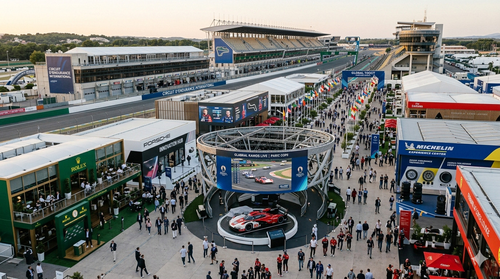
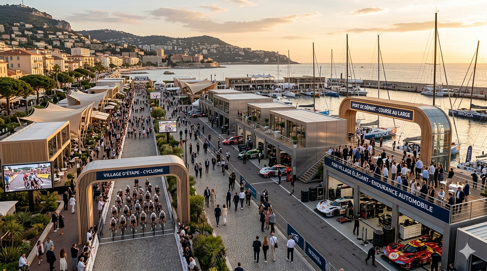

Village sportif immersif :digitalisez votre événement
Pendant longtemps, le village sportif se résumait à un temps fort purement physique : quelques jours d’animations, des rencontres sur site, une forte visibilité pour les partenaires… puis plus rien, ou presque, une fois les structures démontées.
Aujourd’hui, ce modèle classique montre ses limites face au triptyque espace/temps/capacité d’accueil. Les attentes évoluent : un grand événement se prépare en amont, se suit à distance, et se prolonge bien après le coup de sifflet final. C’est précisément là qu’intervient le village sportif immersif.
L’objectif n’est pas de remplacer le réel, mais de l’amplifier intelligemment pour transformer un dispositif éphémère en un actif durable.
Les avantages du village sportif virtuel pour l’événementiel
Le village immersif offre un nouveau point d’entrée digital, cohérent et accessible dans le temps. Ses bénéfices sont immédiats :
- Une expérience continue (Avant / Pendant / Après) : Préparez le terrain et suscitez l’attente en amont. Accompagnez l’expérience sur place (infos pratiques, accès billetterie, contenus exclusifs). Enfin, faites vivre les temps forts bien après la fin de l’événement.
- Une audience sans frontières : Le lieu physique limite l’accès. L’immersif s’ouvre au monde. Surtout lorsqu’il est multilingue, il permet de toucher des fans, des médias étrangers et des partenaires qui ne peuvent pas se déplacer.
- Une visibilité partenaire décuplée : Pour les sponsors, on passe d’un simple pic d’activation le jour J à une présence continue. Le retour sur investissement s’en trouve grandement amélioré.

Neokrome : l’expert en solutions immersives pour le sport
Chez NEOKROME, nous avons une conviction : le virtuel n’a de sens que s’il renforce le réel.
Un village immersif ne doit pas être un gadget technologique. Il doit être utile, lisible, élégant et pensé comme le prolongement naturel de l’événement physique.
Le village sportif de demain restera physique, bien sûr. Mais en existant plus longtemps, plus loin et au-delà de la barrière de la langue, c’est lui qui amplifiera véritablement l’expérience du public et le rayonnement global de votre événement.